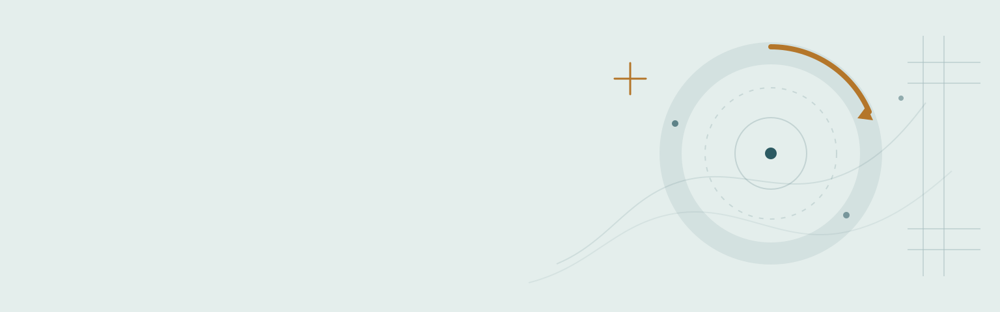

Что делать, если…
Это первая помощь до визита к врачу, а не лечение и не диагноз. Здесь нет названий препаратов и дозировок: подобрать их может только врач, знающий ваши заболевания и то, что вы уже принимаете.
Если состояние ухудшается — не ждите утра и не ищите ответ в интернете.
Острая боль ночью или в выходной
Прополощите рот тёплой водой, аккуратно уберите остатки пищи из промежутков зубной нитью. Держите голову приподнятой: в положении лёжа приток крови к челюсти усиливается и боль нарастает.
Чего делать нельзя. Не грейте больное место — ни грелкой, ни компрессом, ни горячим полосканием. Тепло ускоряет развитие гнойного воспаления, и вместо одного визита получается несколько. Не кладите таблетку на десну: так получается химический ожог слизистой, а боль остаётся. Не пытайтесь вскрыть припухлость самостоятельно.
Когда обращаться немедленно. Отёк переходит на щёку, шею или веко; температура выше 38; трудно открыть рот или глотать; боль не снимается привычным обезболивающим. В этих случаях звоните в скорую или в дежурное отделение, не дожидаясь открытия клиники.
Выбит или сломан зуб
Найдите зуб или отломок. Берите только за коронку, не за корень: на корне остаются клетки, от которых зависит, приживётся ли зуб.
Если зуб загрязнён — ополосните его молоком или физраствором, не трите и не чистите щёткой. Поместите зуб в молоко, физраствор или, если ничего нет, за щёку пострадавшего. Не заворачивайте в салфетку: пересохший корень уже не приживается.
Время решает всё. Шансы сохранить постоянный зуб тем выше, чем быстрее вы доберётесь до врача — счёт идёт на десятки минут, а не на часы. Позвоните в клинику по дороге, чтобы вас встретили.
Молочный зуб обратно не вставляют — но показать ребёнка врачу нужно всё равно: травма могла задеть зачаток постоянного зуба.
Выпала пломба или коронка
Сохраните коронку — часто её можно поставить обратно. Не приклеивайте ничем: ни суперклеем, ни бытовыми составами, ни аптечными средствами «для временной фиксации» без назначения врача. Приклеенную не по правилам коронку часто приходится распиливать вместе с зубом под ней.
До визита жуйте на другой стороне и аккуратно очищайте открывшийся зуб — без пломбы он разрушается быстро. Обратитесь в ближайшие дни, даже если ничего не болит: открытые ткани зуба беззащитны.
Отёк щеки, флюс
Это признак гнойного воспаления. Само оно не проходит — исчезнувшая боль означает не выздоровление, а то, что нерв погиб, и процесс пошёл дальше.
Чего делать нельзя. Не грейте. Не полощите горячим. Не вскрывайте припухлость. Не принимайте антибиотики по совету знакомых или из прошлой упаковки: без назначения они смазывают картину и мешают врачу.
Когда обращаться немедленно. Отёк растёт, поднялась температура, стало трудно открывать рот, глотать или дышать, отёк дошёл до глаза или до шеи — это неотложное состояние, вызывайте скорую.
Кровоточит десна
Единичная кровоточивость при чистке чаще всего говорит о воспалении, вызванном налётом. Продолжайте чистить зубы, а не бросайте — отказ от чистки усиливает воспаление. Добавьте очистку промежутков нитью или ёршиком.
Если кровоточивость держится дольше нескольких дней, десна отёкшая, есть неприятный запах или зубы стали подвижными — нужен осмотр и профессиональная гигиена.
Отдельно. Обильная кровоточивость без явной причины, синяки на теле, кровотечение из носа могут быть связаны не с дёснами, а с общим состоянием. Скажите об этом врачу.
Кровит лунка после удаления
Небольшое подкравливание в первые часы — обычное дело. Прикусите марлевый тампон на 20–30 минут, не разговаривая и не меняя его каждые пять минут: сгустку нужно время.
Чего делать нельзя. Не полощите рот в первые сутки, не сплёвывайте с усилием, не пейте через трубочку, не курите — всё это вымывает сгусток, и на его месте начинается воспаление лунки. Не грейте, не принимайте горячую ванну, откажитесь от алкоголя и нагрузок.
Когда обращаться немедленно. Кровотечение не останавливается больше часа; на третий-четвёртый день боль усилилась вместо того, чтобы утихать, появился неприятный запах — это признаки воспаления лунки, оно лечится у врача за один визит.
Болит после лечения
Чувствительность к холодному, горячему и давлению в первые дни после лечения — ожидаемая реакция тканей. Обычно она уменьшается день ото дня.
Насторожить должно другое. Боль усиливается, а не стихает. Больно накусывать — возможно, пломба завышена по прикусу, это исправляется за несколько минут. Появился отёк. Боль возникла через несколько дней после того, как всё прошло.
В этих случаях не ждите: позвоните в клинику, где вас лечили.
Ребёнок ударился зубом
Успокойте ребёнка и осмотрите рот при хорошем свете. Приложите холод к губе или щеке снаружи, но не к самому зубу.
Показать врачу нужно даже если зуб цел и ребёнок не жалуется. Последствия травмы — потемнение зуба, воспаление, повреждение зачатка постоянного — проявляются через недели и месяцы, когда связь с ударом уже неочевидна.
Немедленно. Потеря сознания, рвота, кровотечение из носа или уха после удара по лицу — это к врачу-травматологу, а не к стоматологу.
Застряло между зубами
Попробуйте зубную нить: заведите её и вытяните вбок, а не рывком вверх. Прополощите рот.
Чего делать нельзя. Не используйте иголки, булавки, ножи и зубочистки с усилием — так травмируется десна и повреждается эмаль. Если предмет не достаётся, оставьте попытки и придите на приём: врач уберёт его за минуту.
Регулярное застревание пищи в одном и том же месте — не особенность прикуса, а обычно признак кариеса на контактной поверхности или неплотной пломбы.
Режется зуб мудрости
Боль и припухлость десны в углу челюсти, трудно открывать рот, неприятный привкус. Полощите тёплой, не горячей водой. Аккуратно очищайте участок мягкой щёткой.
Не грейте и не вскрывайте капюшон над зубом самостоятельно.
Когда обращаться. Если состояние держится больше двух-трёх дней, поднялась температура или стало трудно открывать рот — нужен осмотр и снимок. Решение о сохранении или удалении зуба принимается по снимку, а не по ощущениям.
Если сомневаетесь
Позвоните в клинику и опишите, что происходит. Администратор подскажет, можно ли подождать до планового приёма или нужно приехать сегодня. Это бесплатно и ни к чему не обязывает.
При состояниях, угрожающих жизни — затруднённое дыхание или глотание, быстро растущий отёк, высокая температура с ознобом — вызывайте скорую помощь по номеру 103 или 112.
Редакция от 23.08.2026